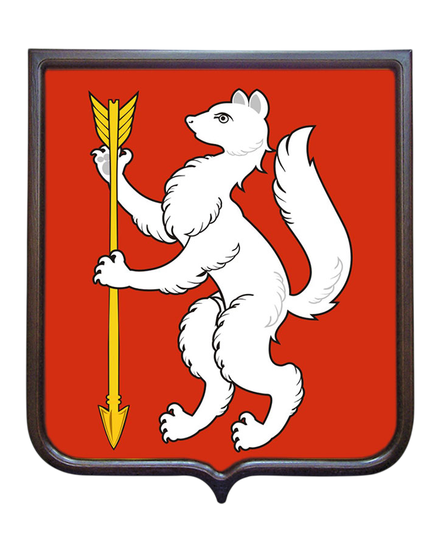

Президент России Владимир Путин подписал указ, который официально утвердил ключевую тему 2026-го – Год единства народов России

-

Инициатива, ранее предложенная атаманом Всероссийского казачьего общества Виталием Кузнецовым на заседании Совета по межнациональным отношениям, получила высший статус и определит общегосударственную повестку. - Стратегическая задача предстоящего Года – укрепление межнационального согласия, дружеских связей и взаимопонимания между всеми этносами многонациональной страны. В основе политики – принцип сочетания: сохранение уникальной самобытности каждого народа при безусловном укреплении общероссийской гражданской идентичности.
По данным Росстата (на начало 2025 года) численность населения Российской Федерации составляет 146,1 млн. человек. Национальный состав населения России характеризуется следующим соотношением: русские составляют около 80% от общего числа жителей страны; представители других национальностей — примерно 20% населения.
Россия — многонациональное государство, на территории которого проживает более 190 этнических групп. Разнообразие этносов объясняется огромной территорией, различными климатическими зонами и историческим пересечением торговых и миграционных путей. Большая часть народов России — коренные, которые издавна населяли территорию страны и проживают на ней постоянно (русские, татары, башкиры и др.).
Представители этнических групп России говорят на языках разных языковых семей. Некоторые группы.
- Славянские— русский язык является государственным и наиболее распространённым.
- Тюркские — к ним относятся татарский, башкирский, чувашский.
- Финно-угорские — к ним относятся марийский, удмуртский, коми.
- Кавказские — в их числе аварский, чеченский, ингушский.
- Палеоазиатские — в их числе чукотский и корякский.
Национальный состав России
| № | Народность[2] | в том числе[2] | Численность чел.[2] | % от всего населения | % от указавших национальность |
|---|---|---|---|---|---|
| 1 | Русские | казаки, поморы | 105 579 179 | 71,73 % | 80,85 % |
| 2 | Татары | кряшены, мишари, сибирские татары, астраханские татары | 4 713 669 | 3,20 % | 3,61 % |
| 3 | Чеченцы | чеченцы-аккинцы | 1 674 854 | 1,14 % | 1,28 % |
| 4 | Башкиры | 1 571 879 | 1,07 % | 1,20 % | |
| 5 | Чуваши | 1 067 139 | 0,73 % | 0,82 % | |
| 6 | Аварцы | андийцы, дидойцы (цезы) и другие андо-цезские народности[4] и арчинцы | 1 012 074 | 0,69 % | 0,78 % |
| 7 | Армяне | черкесогаи | 946 172 | 0,64 % | 0,72 % |
| 8 | Украинцы | 884 007 | 0,60 % | 0,68 % | |
| 9 | Даргинцы | кайтагцы, кубачинцы | 626 601 | 0,43 % | 0,48 % |
| 10 | Казахи | 591 970 | 0,40 % | 0,45 % | |
| … | Итого, указавшие национальную принадлежность | 130 587 364 | 88,73 % | 100,00 % | |
| … | Лица, в переписных листах которых национальная принадлежность не указана | 16 594 759 | 11,27 % | ||
| … | Всего в РФ[55] | 147 182 123 | 100,00 % |